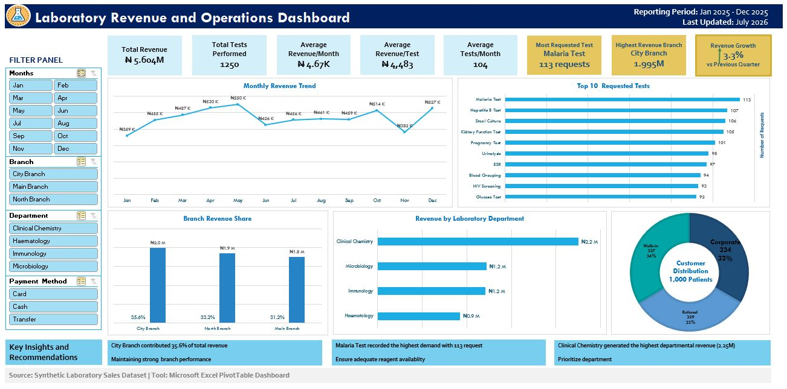

Maryam Abubakar
Medical Laboratory Scientist (BMLS, UDUS) | Healthcare Data Analyst in Training
LinkedIn
Medical Laboratory Scientist (BMLS, UDUS) | Healthcare Data Analyst in Training
LinkedInI am fascinated by the power of diagnostics, data, and technology to transform healthcare. Combining my background in Medical Laboratory Science with data analytics, I use SQL, Excel, and visualization tools to uncover insights that support evidence-based healthcare decisions.

Developed an interactive Excel dashboard analyzing 1,000+ laboratory transactions to evaluate revenue trends, test demand, departmental performance, and payment patterns.
Tools: Excel, Pivot Tables, Data Visualization
View Dashboard | https://github.com/maryam-abubakar/Laboratory-Revenue-Operations-DashboardCurrently developing a healthcare analytics project exploring patient demographics, laboratory test trends, and clinical insights using SQL, Excel, and Power BI.
Tools: SQL, Excel, Power BI, Data Visualization
Email: maryamabubakarmoa@gmail.com
LinkedIn: https://www.linkedin.com/in/abubakarmaryam
GitHub Profile: https://github.com/maryam-abubakar